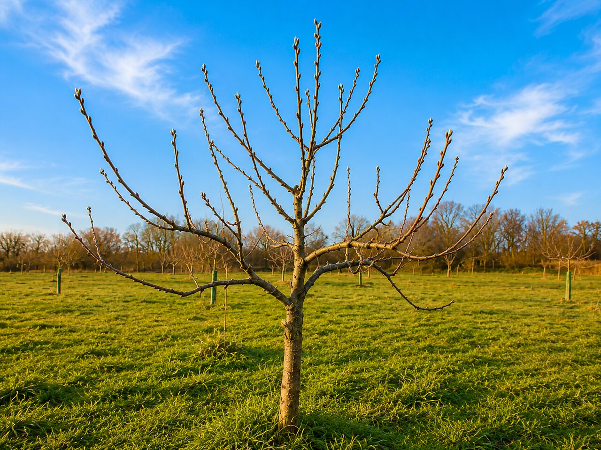
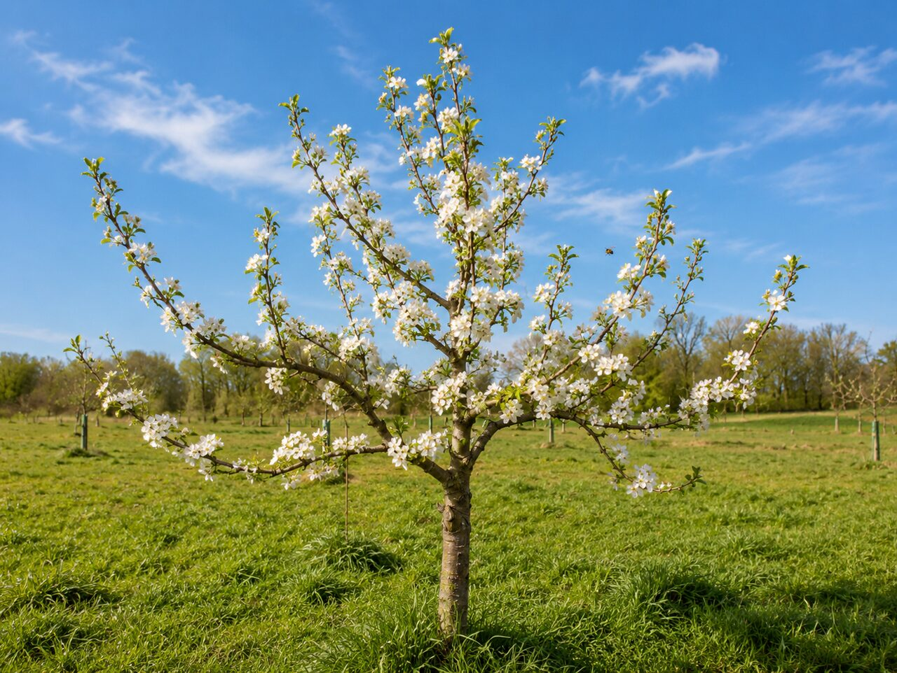
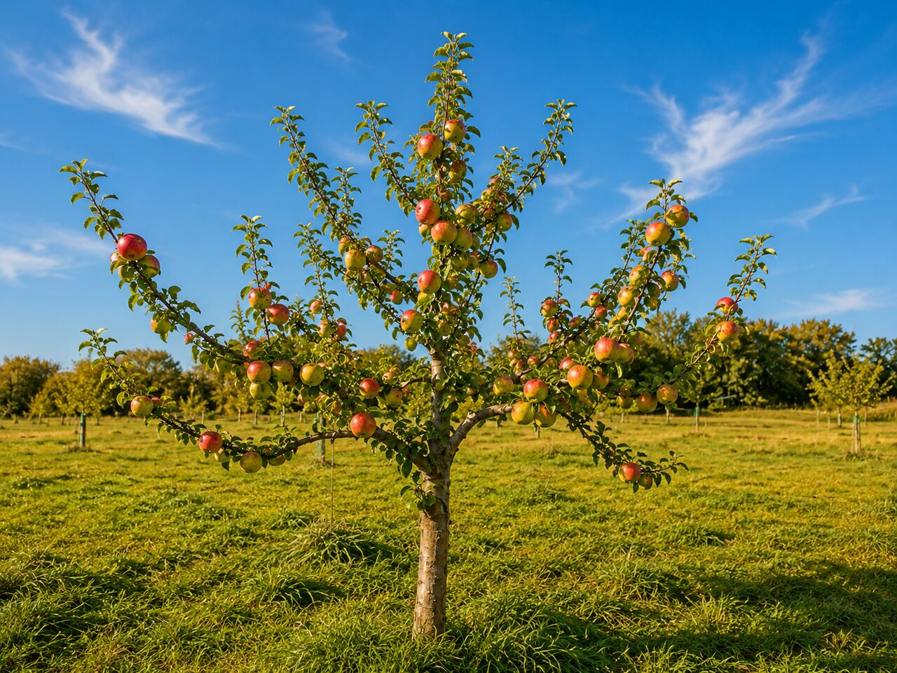
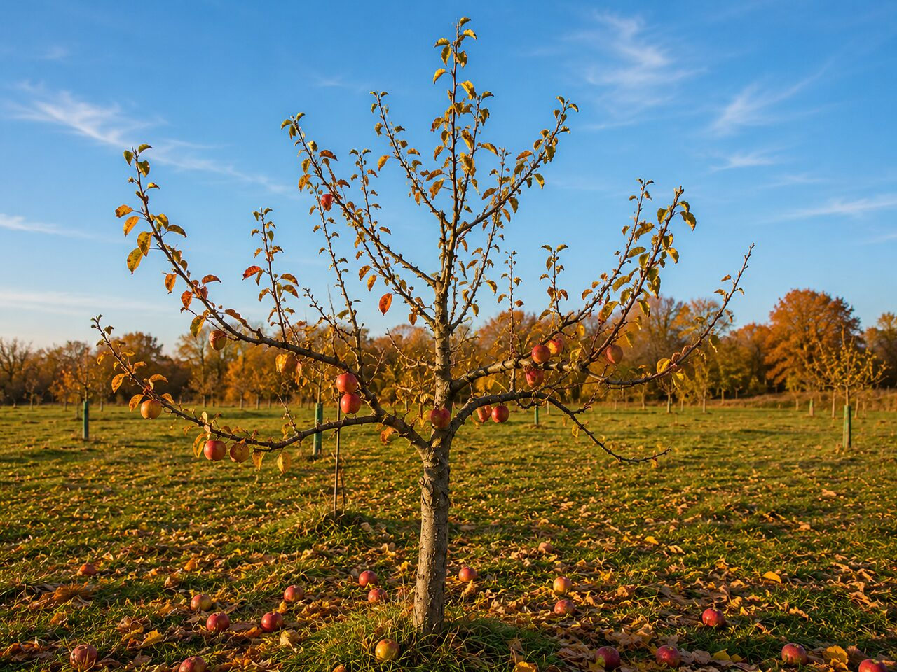
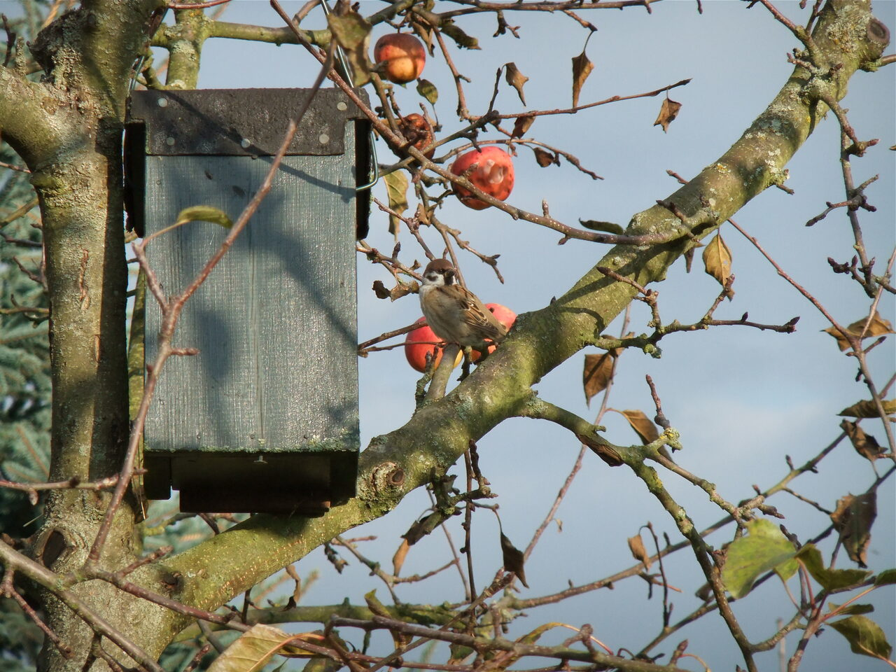

Monat: Januar
Kleines Jahres-Quiz
Du hast den Apfelbaum durchs Jahr begleitet. Zeig, was hängen geblieben ist – sechs kurze Fragen.

Frühling, Sommer, Herbst, Winter — ein Jahr im Leben eines Apfelbaums.




Monat: Januar
Du hast den Apfelbaum durchs Jahr begleitet. Zeig, was hängen geblieben ist – sechs kurze Fragen.